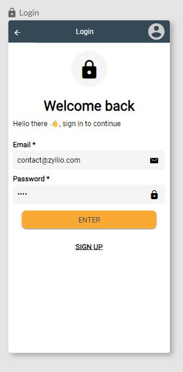
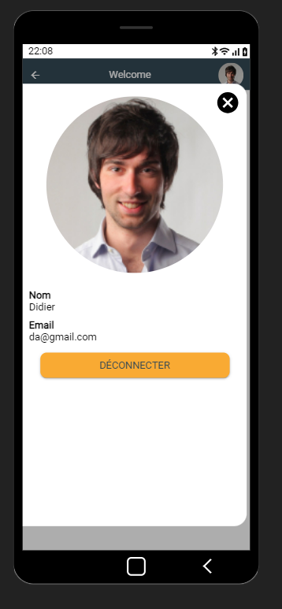

Authentication
Authentication secures access and personalizes the user experience.
Authentication
- Authentication protects user data from unauthorized access. By verifying the user's identity before granting access to their account or sensitive data, the application ensures that only authorized individuals can view or modify this information.
- With authentication, an application can provide a personalized experience by remembering preferences, purchase histories, account settings, etc. This allows for a more tailored and enjoyable service for the user.
- Authentication helps manage access levels within the application. By identifying the user, the application can determine which features or data are accessible to them based on their role or permissions.
Defining a Users Table
Users are defined in a table of your choice, which must meet the following prerequisites:
- It must contain a column called Name.
- It must contain a column called Profile.
- It must contain a column of type Email called Email.
- It must contain a column of type Password called Password.
Other columns characterizing users, which are not necessary for authentication, can be defined, such as their date of birth, city, or role.
The Table Templates section allows you to define a ready-to-use user table. Simply click and drag the Users template into the workspace.

The following Users table is created:

This table is a starting point and can be modified according to needs as long as the above prerequisites are met.
The users table can also be defined in an external data source such as Google Sheets, TimeTonic, or Airtable.
User Management
User management involves editing the data in the users table either:
- From Zyllio, in the Database tab, using the Edit button on the table.
- From Airtable, TimeTonic, or Google Sheets if the table is external.

Users can be modified from this dialog, including adding and deleting users. Additionally, a users table can be imported via a CSV file.
Authenticating a User
Authentication Screen
Authentication is triggered from a screen where a form is defined with at least two input fields:
- Email.
- Password.
This screen can be created from scratch or using the pre-built screen template called Login.

Authentication Button
A button is necessary to trigger authentication. This button must define an action that calls the Login action available from the action editor in the Authentication section.

This action defines the Login action parameters.
Redirection After Authentication
Two approaches are possible to redirect the user after authentication:
- The first approach is to define a transition from the button that triggered the authentication. The transition will occur only if the authentication is successful.
- The second approach is to add a Go To Screen action, which will be triggered only if the authentication is successful.
In general, an action that fails interrupts the chain of actions: the next action is not executed.
Authenticated User Variable
Once the user is successfully authenticated, a variable called User (default name) is made available for further use. For example:
- Display the name or email of the authenticated user.
- Associate the user with a new record, such as the user's email in an Orders table or a Favorites table.
- Use the email for sending an email or Push Notifications.
- ...
This variable is accessible from the Variables section, then the Authentication Screen, and then User.

Logging Out a User
The user can log out, and the user profile panel is accessible from the header of the screens.

